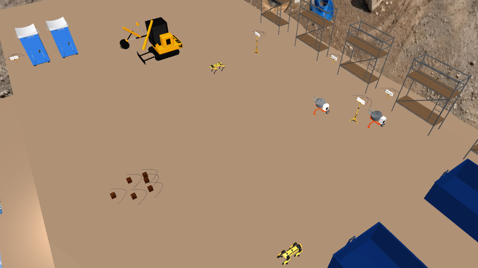
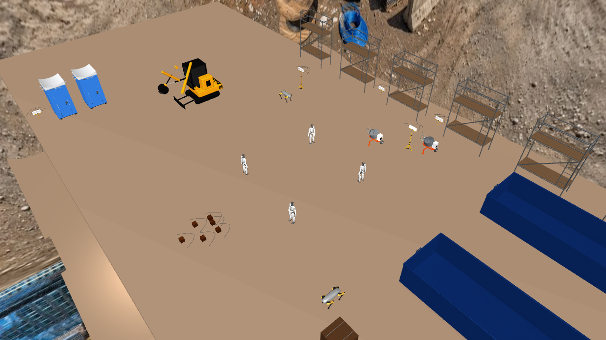
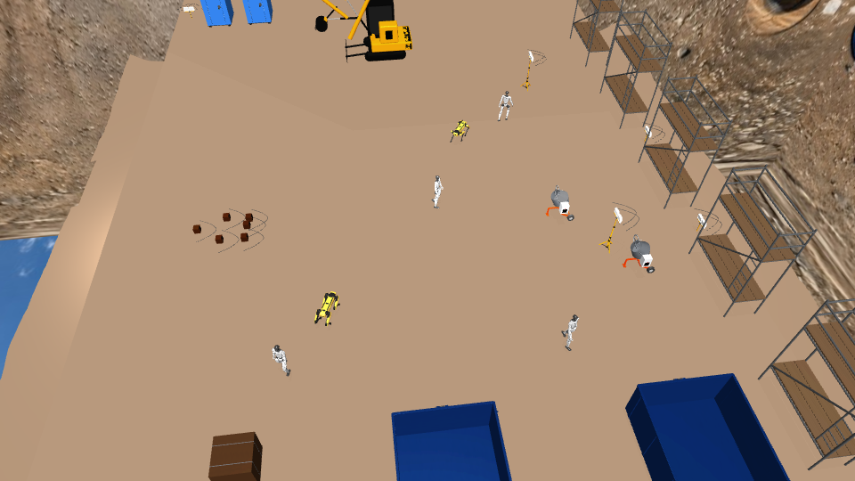
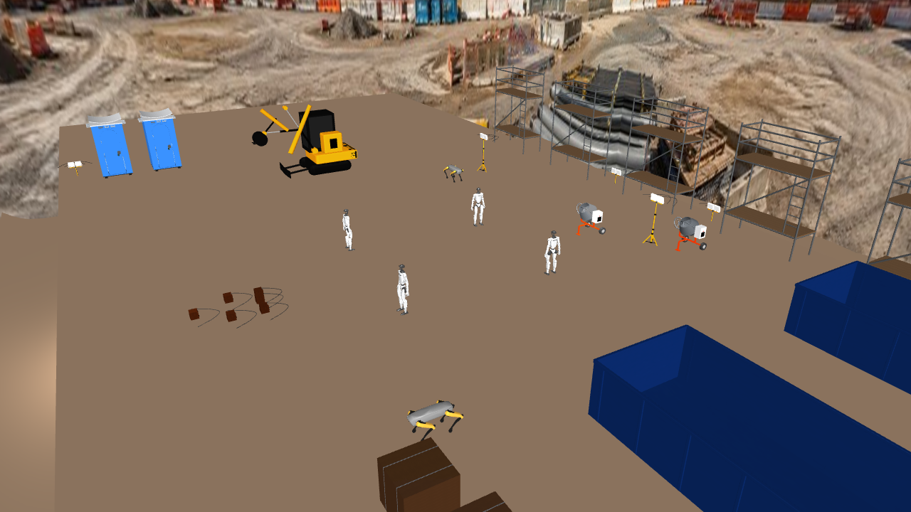
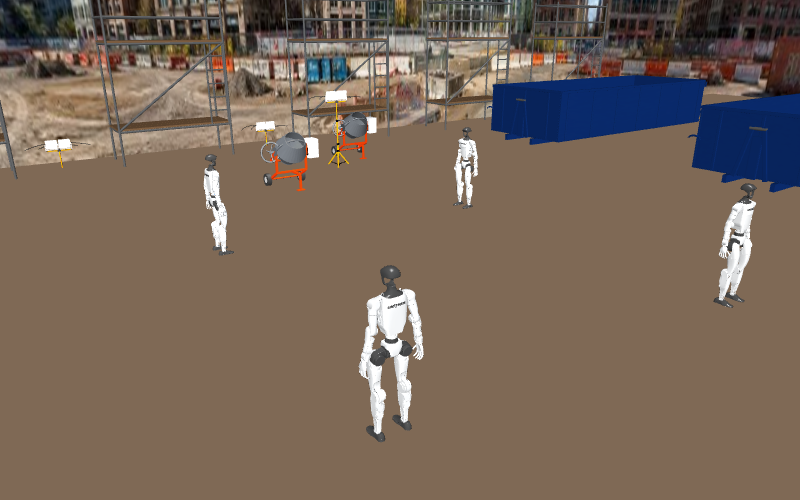
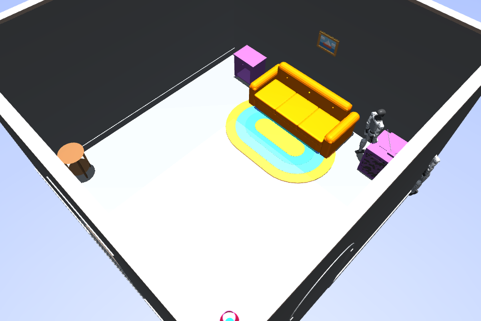

Worksite
Where AI learns to run the floor.
A simulation-to-training platform that benchmarks how well AI coordinates fleets of real-world robots.
Sheet 01 — Demonstration
The floor, in motion
A heterogeneous fleet — excavator, robodogs, wheeled manipulators, humanoids — driven through a scripted construction task and a fleet walkabout inside the MuJoCo scene.
Sheet 02 — Renders
Site renders
Frames from the construction-v1 scene and the broader Worksite scene library.






Sheet 03 — Process
The pipeline
Five stages take a static scene all the way to a training-ready agent.
Scene
A MuJoCo world (scene.xml + metadata.json) becomes a live, resettable environment.
Specs
Tasks, tools, and reward functions define the real job the fleet must accomplish.
→Fleet
Heterogeneous embodiments are driven by an agent through the HUD tool API.
→Eval
HUD grades each rollout from sim state into a reward with an explainable breakdown.
→Train
Reward signal feeds GRPO hill-climbing via Fireworks to improve coordination.
→Sheet 04 — Measurements
Results
All numbers below are real, measured runs. Nothing is fabricated or projected.
Claude — measured Real
claude-sonnet-4-6, routed via the HUD Gateway.
| Task | Reward | Success | Runs | Step budget | Notes |
|---|---|---|---|---|---|
| block_line | 0.875 | 100% | 3 | 50 | Full task success |
| full_coordination | 0.650 ± 0.024 | partial | 3 | 60 | Partial completion |
Scripted reference baseline Real
Deterministic scripted controller — the ground-truth upper reference.
| Task | Blocks | Collisions | Fleet util / patrol | Steps |
|---|---|---|---|---|
| block_line | 4 / 4 | 0 | fleet_utilization 0.17 | — |
| full_coordination | 4 / 4 + full patrol | 0 | full patrol | 28 |
Fireworks RL calibration Real
GLM-5.2 base. Within-group reward std > 0.10 ⇒ usable GRPO signal.
| Config | reward_mean | within_group_reward_std | GRPO signal |
|---|---|---|---|
| n_blocks = 2 | 0.6875 | 0.2693 | usable |
| n_blocks = 3 | 0.125 | 0.25 | usable |
Full GRPO training WIP
Sheet 05 — Taskset
Tasks & scoring
Four tasks in worldsim-construction, each with a partial-credit reward composed from sim state.
block_line
supply-line build
70% blocks
15% patrol
15% fleet utilization
parallel_supply
parallel staging
60% blocks
25% peak simultaneous
15% fleet utilization
heavy_relay
heavy hand-off
60% block
20% patrol
20% fleet utilization
full_coordination
full fleet ops
50% blocks
30% patrol
20% fleet utilization
− collision penalty